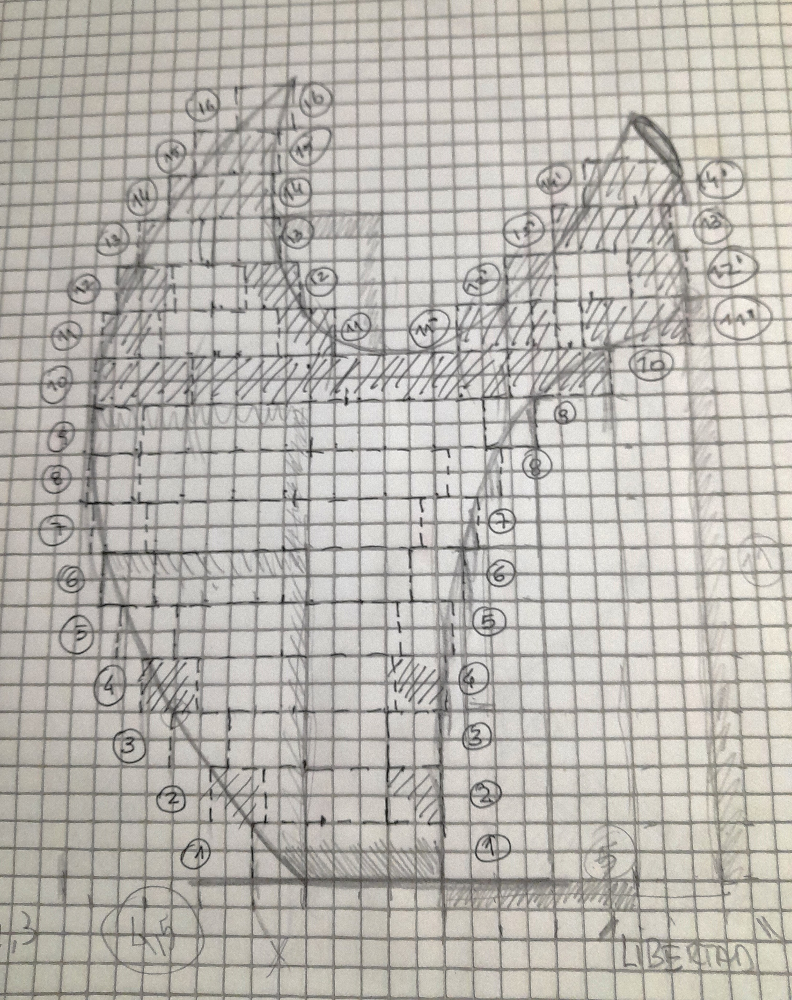
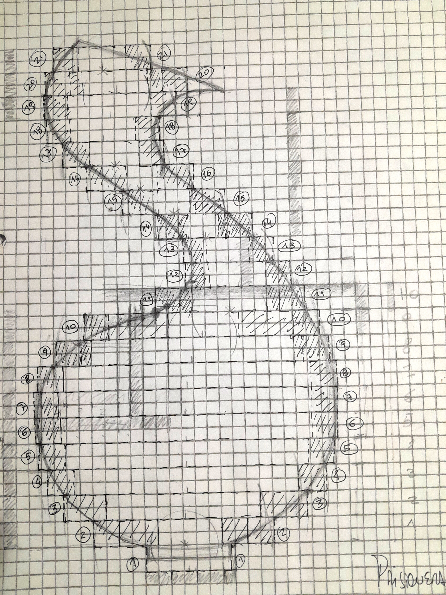
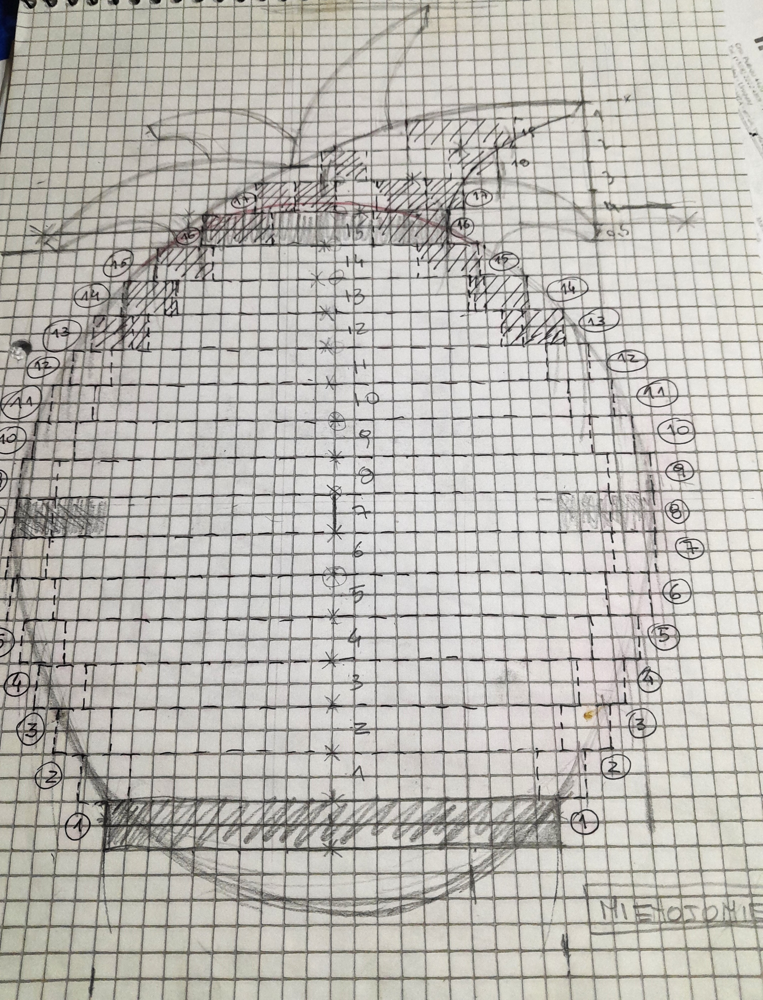

Diseño
A muy grandes rasgos, el diseño no es más que la imaginación de un objeto, es decir, su concepción atendiendo a aspectos como la forma, el aspecto, la funcionalidad, la operatividad y la vida útil del mismo. Los diseñadores, por ende, no hacen más que crear objetos físicos, gráficos o de cualquier otra índole, que sirvan para un fin específico y establecido de antemano. Por ejemplo, un diseñador industrial puede prefigurar piezas de maquinaria para automóviles, o bien formas más eficientes de cañería, mientras que otros podrán dedicarse a crear muebles, juguetes, teléfonos, etc. En mi caso no es diferente es la imaginacion del objeto , lo dibujo y luego preparo con una tecnica que se llama centimetrada para luego poder construirlo en ceramica a escala.
Tecnica Centimetrada
  Esta tecnica se trata de hacer una serie de circulos en papel. Luego se cortan y en taller en una plancha en barro de aproximadamente 1 cm de ancho se usa como molde. De esa forma se colocan una sobre otras deacuerdo al dibujo y se contruye la forma deseada. Fue increible cuando me enseñaron este metodo porque me permite construir a escala.